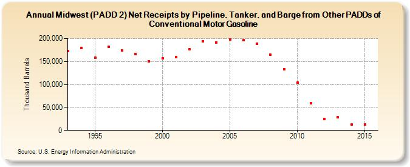

|
Download Data (XLS File) |
|
||||||||
|  | ||||||||
| Midwest (PADD 2) Net Receipts by Pipeline, Tanker, and Barge from Other PADDs of Conventional Motor Gasoline (Thousand Barrels) | ||||||||
| Decade | Year-0 | Year-1 | Year-2 | Year-3 | Year-4 | Year-5 | Year-6 | Year-7 | Year-8 | Year-9 |
|---|---|---|---|---|---|---|---|---|---|---|
| 1990's | 172,557 | 179,018 | 158,547 | 181,778 | 174,485 | 166,731 | 150,347 | |||
| 2000's | 156,382 | 159,184 | 176,524 | 193,456 | 191,191 | 198,221 | 196,292 | 189,328 | 164,395 | 133,276 |
| 2010's | 103,680 | 58,592 | 24,768 | 28,134 | 12,294 | 12,899 | 10,148 |
| - = No Data Reported; -- = Not Applicable; NA = Not Available; W = Withheld to avoid disclosure of individual company data. |
| Release Date: 1/31/2017 |
| Next Release Date: 9/29/2017 |